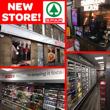

SPAR
Spar was founded in 1932 in the South Holland town of Zegwaart (now Zoetermeer). In 1953 an International Spar office opened in Amsterdam to control and further develop the organisation throughout Europe and other continents. Many Spar shops are in Europe, but they can also be found in a number of countries outside of Europe, such as Australia, Oman, Saudi Arabia, Qatar, United Arab Emirates, Malawi, Nigeria, South Africa, Botswana, Namibia, Zimbabwe, Zambia, Mozambique, Seychelles, Sri Lanka, Cameroon, China, India. Spar opened in the Republic of Vanuatu on 1 December 2009, ending Au Bon Marché's grocery monopoly